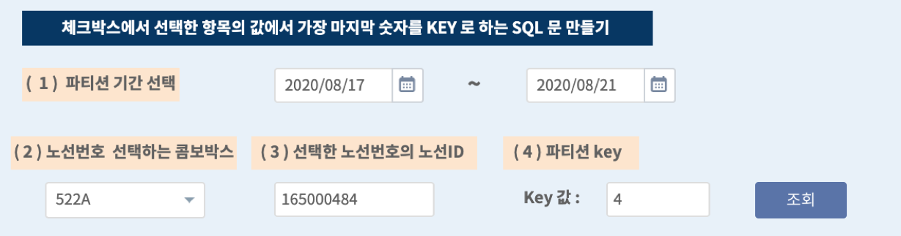

텍스트 상자¶
[텍스트 상자] 텍스트 상자 객체는 Text Area에 사용자가 입력하거나 외부로부터 값을 받아 화면에 보여 줍니다. 줄바꿈 문자가 포함된 여러 줄의 텍스트를 입력, 처리가 가능합니다.
사용 데이터¶
공공데이터 포털에서 인천광역시 버스노선별 정류장 현황 데이터를 사용하였습니다.
데이터 모델 : EDU_INCHEON_BUS_COOR
텍스트 상자 설정¶
텍스트 상자는 콤보박스 선택 이벤트를 통해서 내용이 채워집니다.
트리거로 설정된 콤보박스에서 노선번호가 선택되면 첫번째 텍스트 상자에 노선번호의 노선ID 를 표시합니다.
콤보박스에서의 선택 이벤트가 발생하기 전에는 텍스트 상자의 속성 탭에서 “안내 문구” 를 연한 색상으로 표시됩니다.
두번째 텍스트 상자는 노선ID 가 표시된 텍스트 상자의 변수에서 가장 마지막 문자만을 표시하도록 설정합니다.
트리거 이벤트 발생 전 텍스트 상자 설정하기¶
트리거 설정된 콤보박스에서 선택하기 전(이벤트 발생 전)
1번 텍스트 상자의 “속성” 탭에서 “안내 문구” 에 내용을 입력하여 이벤트 발생하면 표시되는 내용을 안내할 수 있습니다.
2번 텍스트 상자의 “속성” 탭에서 “안내 문구” 에 내용을 입력합니다.
“기본값” 에 입력하면 표시되는 내용이 이벤트설정 전의 디폴트값으로 인식되어 연하게 표시되지 않고, 원래의 표시 값 설정으로 출력합니다.
유형 설정을 ReadOnly 로 체크하면 텍스트 상자안에 문자를 직접 입력하지 않고, 설정한 변수와 값만 표시할 수 있습니다.
트리거 이벤트 발생 시 텍스트 상자 설정하기¶
데이터 탭에서 데이터 실행방법 설정 에서 노선번호를 선택할 수 있는 콤보박스를 트리거로 설정합니다.
설정할 변수/값 애 트리거 설정한 콤보박스의 변수명을 입력합니다.
콤보박스는 화면에 보여질 필드 와 값으로 사용될 필드 를 다르게 설정하여, 변수 combo_1 에는 노선ID 가 저장되게 설정하였습니다.
고급 활용 팁 : 설정할 변수/값에 Nunjucks 사용하기¶
IRIS 테이블의 파티선 Key 값을 표시하는 텍스트 상자는 노선ID 가 출력되는 텍스트 상자의 변수(textarea_2)를 사용합니다.
예를 들어 파티션 Key로 노선ID 의 마지막 번호로 정했다고 했을 때,
설정할 변수/값 영역에는 다음처럼 입력하면 텍스트 상자의 변수(textarea_2) 값인 노선ID 의 마지막 위치의 문자를 가져올 수 있습니다.
${textarea_2 | last}